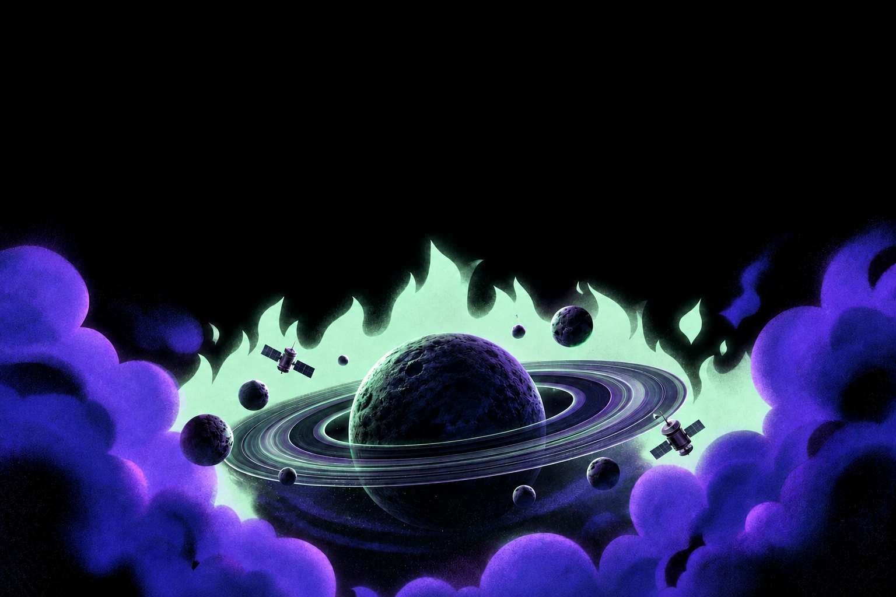

Orbit
About
Features
Pricing
Contact
Blog
Try for free
Get a demo
About
Features
Pricing
Contact
Blog
Get a demo
New
Go beyond the ordinary
See beyond now
Explore the stars
Everything you need to discover, understand, and explore what is out there.
Try for free
Explore